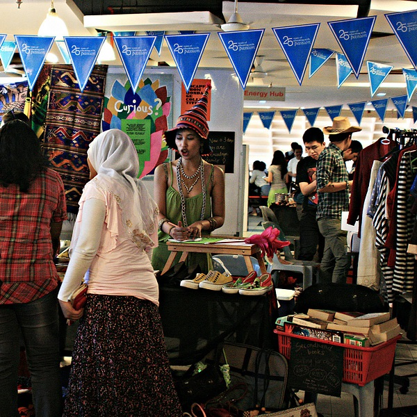
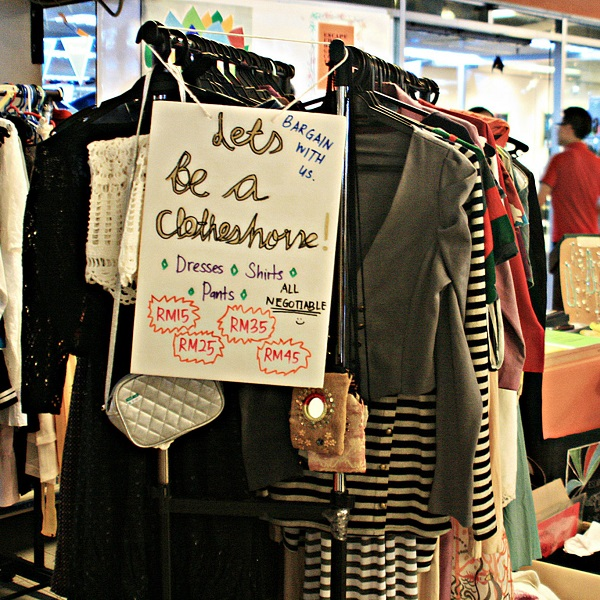
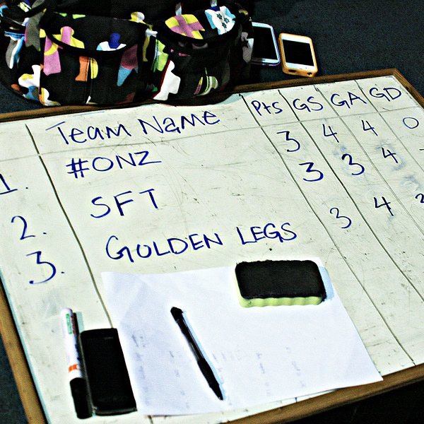
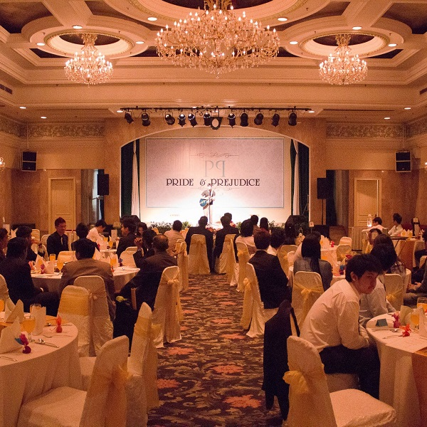

American Degree Transfer Program (ADTP) Student Committee
Head of Human Resources
I became part of the American Degree Transfer Program (ADTP) Student Committee from January 2012 to March 2013, first as a regular Logisitcs team member, then as Head of the Human Resources Department. As a student body that commits to provide help and assistance as well as to protect the welfare of ADTP students, we organized events that helped students to familiarize with American cultures, news, and occasions.
Background
The American Degree Transfer Program in Sunway University is a program designed to prepare students to transfer to a university in the United States, and sometimes the UK and Australia. For aspiring Malaysian students, it is one of the few affordable and reliable methods to pursue a tertiary education abroad. By providing elementary and pre-requisite courses, students usually fulfill the transfer requirements to their desired universities in the States through the program.
The ADTP Student Committee is a student body serves the student of the program by ensuring their welfare, as well as to provide helpful and essential information about the program or events. Committee members are selected through an application to 1 or 2 specific departments (Communications, Logistics, Human Resources, Publicity), of which they will have to pass an interview by the lecturers and existing commitee. Once selected, the students work together in their applied positions under the Head of Department.
My Work and Experience
   I first started out as a regular member in the Logistics Department, which is responsible for room reservations, equipment arrangements and setups, as well as food or travel logistics if required. For the first few months working as a Logistics member, I familiarized myself and worked with various Sunway University departments to coordinate the tasks of setting up event locations.
Afterwards, I was promoted to Head of Human Resources, which handles mostly inter-department communications as well as providing support to other departments, especially the Logistics Department. I was also given the responsibility of organizing ADTP's sports event, which became the Human Resources Department's main project then. We organized the ADTP Futsal Event in 2012, and it turned out to be a great success.
Working as the Head of Human Resources was one of my earliest experience in holding a leadership position. I learnt to distribute the tasks among the team members, making use of their strengths and abilities to ensure that the goal could be reached efficiently. Besides, I also worked closely with other department heads whenever an event happened in order to make sure the event ran smoothly, like taking over certain areas of their tasks temporarily when they were understaffed.